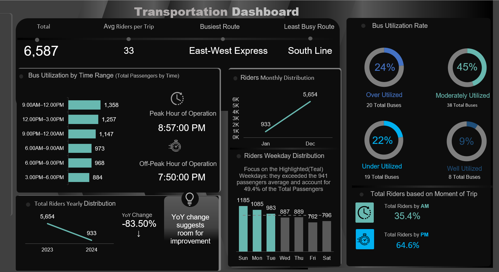
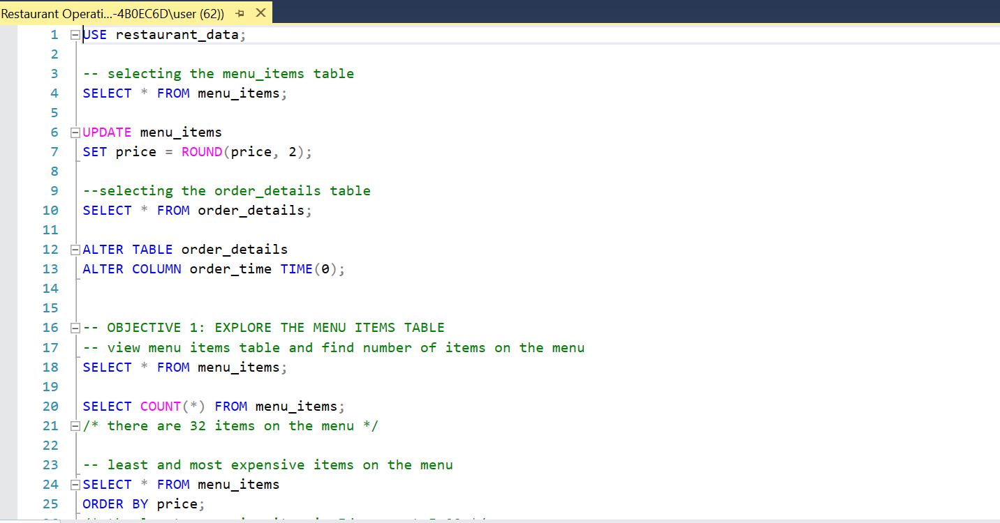
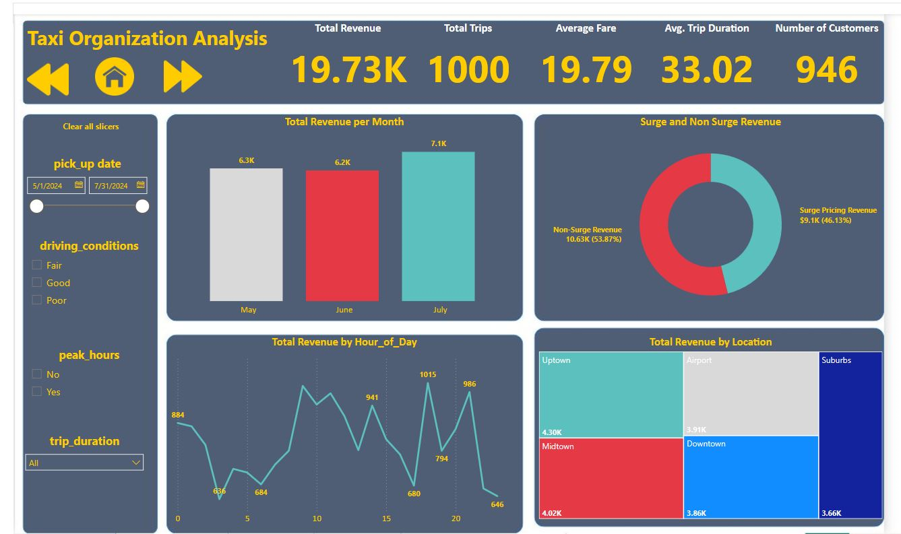
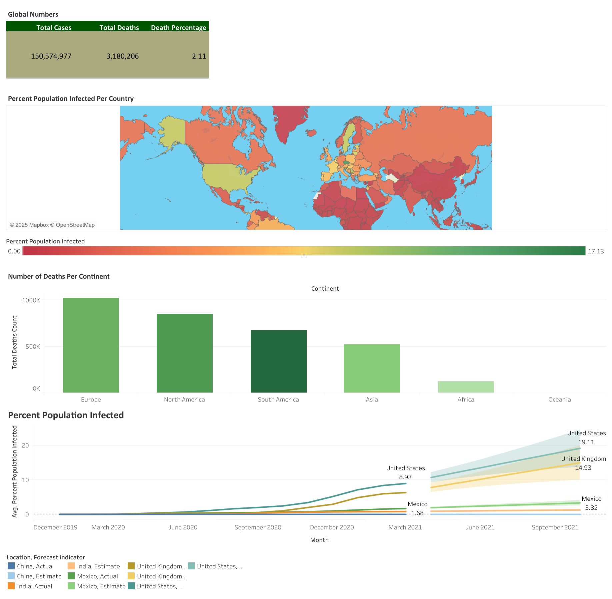

My Projects
Bus Transportation Analysis Interactive Excel Dashboard

Designed and developed an automated, interactive Excel dashboard to analyze bus transportation trends, usage, and performance for operational decision-making. Built using Excel with Power Query and Power Pivot, the dashboard automatically updates when new data is added, transforming raw transportation data into dynamic, decision-ready insights.
Key Insights:
- Busiest and least busy routes: East-West Express most congested, South Line least congested.
- Peak operating hours: 8:57 PM; Off-peak: 7:50 PM.
- Bus utilization breakdown: 24% over-utilized, 22% under-utilized, 45% moderately utilized, 9% well-utilized.
- Year-over-year ridership decline: -83.5%.
Data Model: Structured star schema in Excel Power Pivot with fact and dimension tables for efficient reporting and automated refresh.
Technologies: Microsoft Excel, Power Query, Power Pivot, DAX, PivotTables, Data Visualization & Dashboard Design.
View ProjectSQL Exploratory Data Analysis - Optimizing Restaurant Performance

Conducted an in-depth SQL analysis to evaluate restaurant sales performance, customer preferences, and pricing strategies using menu_items and order_details tables, generating actionable insights.
Key Insights:
- Italian dishes are the most expensive (avg. $16.75), American dishes the cheapest (avg. $10.07).
- The Hamburger is the most ordered item (622 orders), Chicken Tacos the least (123 orders).
- High-spending orders favor Italian cuisine, top order totaling $192.15 for 14 items.
- 20 orders had more than 12 items, highlighting group/family patterns.
Recommendations: Introduce premium American menu options, optimize low-performing items (e.g., Chicken Tacos), and target loyalty programs for high-spending customers.
Technologies: SQL (PostgreSQL/MySQL), Data Cleaning, Data Analysis, Joins, Aggregations.
View ProjectTaxi Organization Analysis – Power BI Dashboard

Developed a Power BI dashboard analyzing taxi operations over May–July 2024, identifying revenue patterns, trip behavior, driver efficiency, and external impacts.
Key Insights:
- Revenue grew from $6.3k in May to $7.1k in July.
- Peak revenue hours: 6 PM ($1,014), 10 AM ($945), 2 PM ($941).
- Uptown generated the highest revenue ($4.30k), Suburbs the least ($3.66k).
- Snowy conditions led to highest demand ($4.2k).
- Long-distance trips accounted for 75% of revenue; short trips 3%.
Recommendations: Optimize fleet allocation in Uptown during peak hours, promote long-distance trips, adjust surge pricing, and enhance short-trip profitability.
Technologies: Microsoft Power BI, DAX, CSV Data Processing, Data Visualization.
View ProjectCovid‑19 Visualization – Tableau Dashboard

Interactive Tableau dashboard visualizing global Covid‑19 trends, with global and country-specific insights.
Key Insights:
- Covid‑19 cases show distinct waves, major surges in specific months.
- Certain countries/regions consistently reported higher case counts.
- Death rates varied significantly across regions.
- Recovery rates improved over time with vaccination coverage expansion.
- Some regions reported lower case counts due to limited testing/under-reporting.
Technologies: Tableau, CSV Data Processing, Data Visualization, Interactive Dashboard Design.
View Project